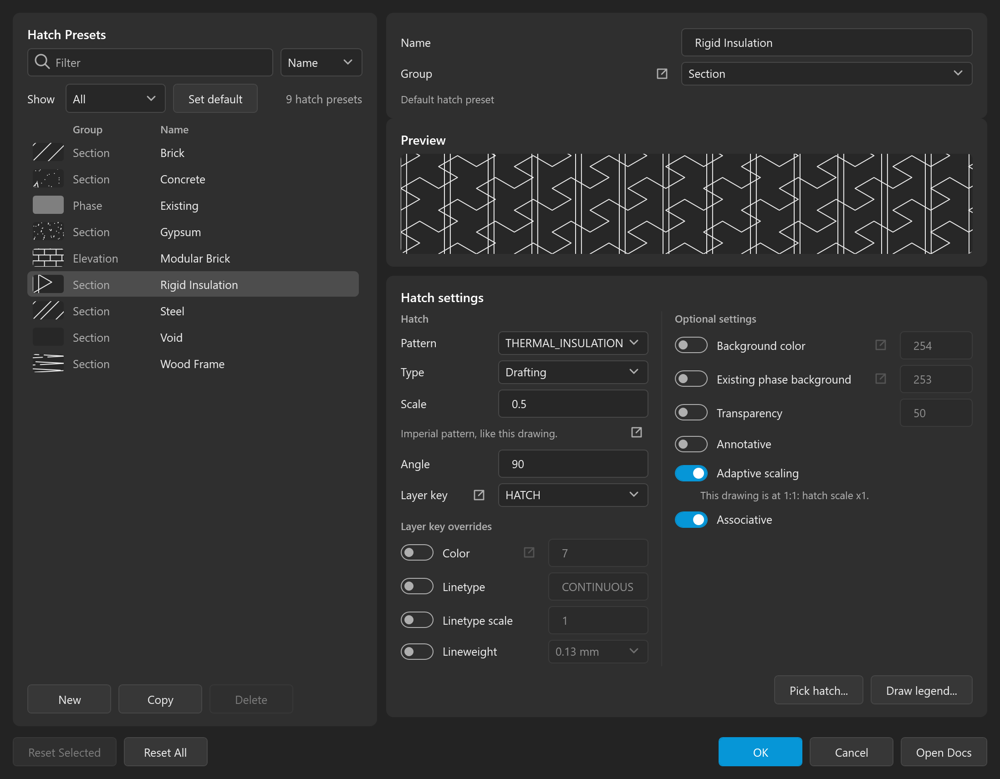

Hatch Presets
| Function Syntax | DYL-HATCHPRESETS |
| Requires | AutoCAD for Windows (ActiveX / Visual LISP) |
| Licence | GNU General Public License v3 |
Program Description
Keep the hatches of your materials in one place: a hatch preset is the hatch of an outline (pattern, scale, angle, layer key and the optional colors, linetype, lineweight and transparency), shared by every material that uses it. Materials that look the same in a drawing share one hatch preset (Extruded Polystyrene, Expanded Polystyrene and Polyisocyanurate all use Rigid Insulation), each with its own data. Change a hatch preset, and every material that uses it, and every Quick Draw and Quick Shape preset drawn with them, draws the new hatch.

How To Use
- Type Dyl-HatchPresets or click Hatch Presets in the Draw panel of the ribbon: the Manager opens on its Hatch Presets tab. The open button beside Cut or Surface in the Materials window opens this window over it, to pick the hatch preset of the material.
- Pick a hatch preset, or click New or Copy; change its pattern, scale and layer key, and check the optional settings you want.
- Pick hatch... copies the settings of a hatch of the drawing; Draw legend... draws a box of each hatch preset selected, with its name.
- Click OK: every material that uses a hatch preset changed draws its new hatch. Opened from the Materials window, the hatch preset selected becomes the Cut or Surface of the materials selected there.
How a preset is drawn and its border are set in each preset, in the Quick Draw and Quick Shape windows, never here.
The Window
- Filter / sort – above the list: type a part of a group, a name or a pattern to list only the hatch presets that have it (any case; the list follows as you type; empty: every hatch preset). The list beside it sorts them by name (the default) or by group then name, kept for the session. The number of hatch presets listed is given under it.
- Show / Set default – Show lists only the hatch presets of one group (All: every group); the filter and the sort apply within it. Set default makes the group shown the one the window opens on, every time and in every drawing.
- Hatch preset list – the hatch of each hatch preset as it plots, its group and its name. The hatch follows the values as you change them.
- Several hatch presets at once – Ctrl+click adds a hatch preset to the selection (or removes it), Shift+click selects a range. The status under the name reads 3 hatch presets selected and the fields show the values of the hatch preset clicked first: a value changed is given to every hatch preset selected, their other values are left as they are. The name and Copy are for one hatch preset only (greyed out); Delete removes them all (only when they are all custom), Reset Selected resets the default ones among them.
- Name, Group – at the top right (see Parameters). Under them, the status of the hatch preset (Default hatch preset, Default hatch preset, modified, Custom hatch preset).
- Preview – the hatch preset shown as it plots, at the drawing scale. A Drafting hatch preset is always drawn at its size on paper, 1:1, never zoomed, in the preview as in the list: every Drafting hatch preset is seen at the same scale, so you can compare them and adjust their scales one against the other (a pattern larger than the preview shows only a part of it, one too fine for the screen is grey). A Model hatch preset is zoomed out to show its pattern when it is too large for the preview, its scale then shown in a corner (1:100). It follows the pattern, the scale, the angle and the type as you change them.
- Hatch settings – see Hatch Settings.
- Values checked as you type – a name used by another hatch preset, an empty name or a value that is not valid (a scale that is not a number greater than 0, a color that is not one) shows its message at the bottom of the window; another hatch preset cannot be selected nor the window closed (but with Cancel) until it is fixed.
- New – adds a custom hatch preset after the one shown, in its group (see New hatch preset), its name ready to be typed. Copy – adds a custom copy of the hatch preset shown. Delete – removes the custom hatch presets selected, once you confirm (default hatch presets cannot be deleted, only reset). A material that uses a deleted hatch preset is drawn without hatch until it gets another one (Dyl-Diagnostics lists those materials).
- Reset Selected – (bottom left) gives the default hatch presets selected their shipped values back. Reset All – does it for every default hatch preset, once you confirm; custom hatch presets are kept (renamed if a restored name is already used).
- OK – saves the hatch presets (your copy of the hatch presets file; the shipped file is never changed) and, when the window was opened from the Materials window, gives it the hatch preset selected. Cancel – discards every change made in the window. Open Docs – opens this page; the window stays open.
- Pick hatch... – (under the Hatch settings) gives the hatch settings of a hatch of the drawing to the selected hatch presets. The window closes and asks for a hatch (Enter cancels), then opens again with its values: its pattern, scale and angle, Annotative and Associative, the layer key whose layer it is on (in any phase), the layer key overrides it has (color, linetype, linetype scale, lineweight, transparency) and its background color; a setting the hatch does not have (ByLayer, no background) is turned off. Its scale is turned back into the units of the pattern, and to 1:1 when the hatch preset uses Adaptive scaling, so the hatch preset draws the hatch picked again. The name, the group, Adaptive scaling and the Existing phase background are kept. A hatch on a layer that is no layer key keeps the hatch layer key of the preset (a message says so); a gradient or a user-defined hatch (no pattern of a .pat file) is refused. Nothing is saved until OK.
When no .pat file of the support path has the pattern of the hatch (a hatch from another drawing), a hatch preset could not draw it: you are asked whether to rebuild <pattern>.pat from the lines stored in the hatch, with Dyl-RebuildPat. Unexpected results may happen: the pattern rebuilt can differ from the original (check the hatches the preset draws). When Rebuild Patterns is turned off in the Startup Suite, you are asked to turn it on and load it, then the pattern is rebuilt. The pattern rebuilt is in the units of this drawing, and the scale of the hatch is read in them. No to either question copies the hatch anyway, its pattern marked (not found on the support path): run RPAT on the hatch before drawing that hatch preset. - Draw legend... – (under the Hatch settings) draws a legend of the selected hatch presets in the drawing, with the values being edited (saved or not). The window closes and asks for the top left corner of the legend (Enter or Esc: nothing drawn); then, one under the other in the order of the list, a box hatched with each hatch preset, with its name beside it, and the window opens again. The boxes and the names are on the current layer, in the current text style, along the X axis of the UCS; each hatch is on the layer of its hatch layer key, behind its box. Their size follows the drawing scale (see Drawing Scale): at 1:1, a box is 20 x 10 mm with a 2.5 mm text in a metric drawing, 3/4 x 3/8 in with a 3/32 in text in an imperial one; at 1:50 they are 50 times as large, so the legend plots at the same size at every scale. Undo removes the whole legend.
The open buttons (Group, the .pat file of the pattern, Layer key, the colors), Pick hatch... and Draw legend... close the window for a moment and open it again as it was, the value picked filled in.
Parameters
The right side of the window shows the Name (unique), the Group, the Preview and the Hatch settings box, in two columns: the hatch and its layer key overrides on the left, the optional settings on the right. The basic settings are always used. Every other setting has a checkbox: its value stays greyed out until it is checked, and while it is unchecked the property is left as the layer of the layer key (ByLayer) or the AutoCAD default.
- Name – the name shown in the lists and in the preset summary. Two hatch presets cannot have the same name.
- Group – the kind of drawing the hatch preset is used in, to sort and filter the list, picked from the groups of the Preset Groups window (the same groups as the presets of Quick Draw and Quick Shape; the square open button just left of the list opens that window). A group typed in HatchPresets.csv that is not in this list stays selectable.
Values: a color is an AutoCAD color number (1–255) or a true color r,g,b, the square open button beside it opens the AutoCAD color dialog; a lineweight is picked from the AutoCAD lineweights; a transparency is 0 (opaque) to 90; scales and factors are numbers greater than 0.
Hatch Settings
Color, linetype and lineweight, under Layer key overrides, replace the properties of the hatch layer key for the hatch; background color, existing phase background, transparency and how the hatch is scaled and made (annotative, adaptive scaling, associative) are under Optional settings. The hatch is always drawn behind its border (draw order).
| Setting | Use |
|---|---|
| Pattern | The hatch pattern, picked from every pattern of the .pat files on the support path (acad.pat, acadiso.pat, custom files). A pattern not found stays in the list, marked (not found on the support path). SOLID fills the outline: scales, angle, background colors, lineweight, annotative, drawing scale and the Linear hatch scale and origin are then greyed out and not used. None (first in the list) is a hatch preset without hatch: the hatch settings are greyed out, and what is drawn with it is only its outline, or a space between the lines of an assembly (the Void hatch preset of the Void material, an air space). |
| Type | Drafting: the hatch has a size on paper, as the section hatches of Revit; it is annotative or follows the drawing scale (Adaptive scaling), so it plots at the same size at every scale (Brick, Concrete). Model: the hatch has a real size in the model, as the model patterns of Revit: its scale makes the lines of the pattern real dimensions (Modular Brick: a course of 2-2/3 in), so it plots smaller at 1:100 than at 1:50; Annotative and Adaptive scaling are then greyed out and off. A hatch preset of an older version is Drafting; Pick hatch... makes it Drafting when the hatch picked is annotative. |
| Scale | The hatch scale, one value for imperial and metric drawings, in the units of the pattern. The units of the pattern are found for you: a pattern of acad.pat is imperial, one of acadiso.pat metric (AutoCAD takes it from acadiso.pat in a metric drawing, MEASUREMENT = 1, and from acad.pat in an imperial one). A pattern in a file of its own (<name>.pat) is metric when the file says so (a line ;%UNITS=MM, written by Dyl-RebuildPat; ;%UNITS=INCH: imperial) or else when the name of the file or of its folder has ISO or METRIC in it; otherwise it is imperial, like the patterns of AutoCAD and its toolsets. An imperial pattern in a metric drawing has its scale multiplied by 25.4, a metric pattern in an imperial drawing divided by 25.4, so it draws at the same size in both. The line under Scale gives the units found and the factor in the current drawing (Imperial pattern: x25.4 here (metric).); the open button at the end of that line opens the .pat file of the pattern in Notepad, to inspect it (greyed out when no file defines the pattern, and for SOLID). |
| Angle | Hatch angle, in degrees. With the Linear method, the angle of each segment is added so the pattern follows the line. |
| Layer key | The layer key of the hatch, picked from the keys sorted by name: the hatch goes on its layer (created with the key properties when missing). A key that is not defined stays in the list, marked (not defined), and draws on a layer of the same name. The square open button beside it opens the Layer Keys window on that key, to create or edit keys (saved on its own OK). Double-click a key there to use it: the keys are saved, the window closes and the key becomes the hatch layer key of the hatch presets selected. |
| Color | Optional. Color of the hatch pattern. |
| Linetype | Optional. Linetype of the hatch, loaded from acad.lin or acadiso.lin when the drawing does not have it (not for SOLID). Most patterns draw their own dashes: the linetype shows only on their continuous lines. |
| Linetype scale | Optional. Linetype scale of the hatch (not for SOLID). |
| Lineweight | Optional. Lineweight of the pattern (not for SOLID). |
| Background color | Optional. Background fill color behind the pattern (not for SOLID). |
| Existing phase background | Optional. Background color used in place of Background color while auto-phase is on and the active phase is E (existing to remain), e.g. to screen the existing work. It needs the DynALisp reactors and PH-AUTO on. Not for SOLID. |
| Transparency | Optional. Transparency of the hatch, 0 (opaque) to 90. |
| Annotative | The hatch is annotative: it shows at the same size at every annotation scale. Greyed out for a Model hatch preset. |
| Adaptive scaling | The hatch follows the drawing scale: it is not annotative, but its scale is multiplied by the drawing scale (CANNOSCALE): the scale above is always set for 1:1, multiplied by 50 at 1:50. Greyed out while Annotative is checked, and for a Model hatch preset. See Drawing Scale. |
| Associative | The hatch follows its border when the border is edited. A hatch drawn without its border (Has a border unchecked in a Quick Draw preset) is never associative. |
Border
The border of the hatch (its layer key, the overrides of its properties, its transparency, and in Quick Draw Has a border) is set in each preset, in the Border settings box of the Quick Draw and Quick Shape windows: two presets of one material can have different borders. The border columns of HatchPresets.csv are no longer edited: a preset of an older file, saved before the presets had a border, gets the border of the hatch preset of its material when it is read, and the default presets get the border of the hatch preset of their default material (the Border key of the tables below).
New Hatch Preset
New starts from: pattern ANSI31, scale 1.0, angle 0, hatch key HATCH, annotative and associative, and every optional setting unchecked. Copy starts from the selected hatch preset.
Default Hatch Presets
The hatch presets shipped with DynALisp (Res\HatchPresets.csv). Unless noted, they are not annotative, not associative, and every optional setting is unchecked. Used by: the default materials that use it. Border key: the border layer key of the default presets of those materials (the border is set in each preset). Scale: the scale of the hatch preset, in the units of its pattern (see Scale above). Layer keys: FINE A-Detl-Fine, THIN A-Detl-Thin, MED A-Detl-Medm, WIDE A-Detl-Wide, XLINE A-Detl-XFin, HATCH A-Detl-Patt (see Layer Keys).
| Group | Name | Used by | Pattern | Scale | Angle | Border key | Hatch key | Notes |
|---|---|---|---|---|---|---|---|---|
| Phase | Demolition | Demolition | ANSI31 | 0.5 | 90.0 | THIN | HATCH | Annotative. |
| Phase | Not In Contract | Not In Contract | ANSI31 | 1.5 | 90.0 | XLINE | HATCH | Annotative. |
| Phase | Existing | Existing | SOLID | – | – | XLINE | HATCH | – |
| Section | Concrete | Concrete, Terrazzo | CONCRETE_C | 1.0 | 0 | WIDE | HATCH | Annotative. |
| Section | Lightweight Concrete | Lightweight Concrete, Lightweight Concrete Board, Fiber Cement Siding | CONCRETE | 1.0 | 0 | THIN | HATCH | Annotative. |
| Section | Mortar | Mortar | GENERAL_STIPPLE | 1.0 | 0 | FINE | HATCH | Annotative. |
| Section | Brick | Brick, Hardboard, Concrete Brick, Hardboard Siding | ANSI31 | 1.0 | 0 | MED | HATCH | Annotative. |
| Section | Stone | Stone, Quartzite And Sandstone, Slate | ANSI33 | 1.0 | 0 | WIDE | HATCH | Annotative. |
| Section | CMU | CMU, CMU 90 mm Hollow, CMU 140 mm Hollow, CMU 190 mm Hollow, CMU 240 mm Hollow, CMU 290 mm Hollow, CMU 190 mm Perlite Filled, CMU 140 mm Vermiculite Filled, CMU 190 mm Vermiculite Filled, CMU 240 mm Vermiculite Filled, CMU 290 mm Vermiculite Filled | ANSI37 | 1.0 | 0 | WIDE | HATCH | Annotative. |
| Section | Firebrick | Firebrick | ANSI35 | 0.5 | 0 | MED | HATCH | Annotative. |
| Section | Marble | Marble | ANSI36 | 0.5 | 0 | MED | HATCH | Annotative. |
| Section | Grout | Grout | GENERAL_STIPPLE | 2.0 | 0 | XLINE | HATCH | Annotative. |
| Section | Iron | Iron | ANSI31 | 0.5 | 0 | MED | HATCH | Annotative. |
| Section | Steel | Steel | ANSI32 | 0.5 | 0 | MED | HATCH | Annotative. |
| Section | Bronze | Bronze | ANSI33 | 0.5 | 0 | MED | HATCH | Annotative. |
| Elevation | Modular Brick | Brick (Surface) | BRICK | 10.6667 | 0 | THIN | HATCH | Model: a course of 2-2/3 in, the brick in elevation. |
| Section | Lead | Lead | ANSI37 | 0.5 | 0 | MED | HATCH | Annotative. |
| Section | Aluminium | Aluminium, Metal Or Vinyl Siding, Metal Or Vinyl Siding - Insulated, Metal Or Vinyl Siding - Insulated And Foil | ANSI38 | 0.5 | 0 | MED | HATCH | Annotative. |
| Section | Plywood | Plywood | WOOD_GLU-LAMBEAM | 1.0 | 0 | MED | HATCH | Annotative. |
| Section | Wood Plank | Wood Plank, Wood Shingle Siding, Wood Shingle Siding - Double, Wood Siding, Wood Shingle Roofing, Hardwood Flooring | WOOD_2 | 0.1875 | 0 | MED | HATCH | Annotative. |
| Section | Wood Frame | Wood Frame, Birch, Oak, Maple And Ash, White Cedar, Yellow Cypress, White Spruce, White Pine, Lodgepole Pine, Red Pine, Hemlock, Western Hemlock, Douglas Fir Or Larch, Amabilis Fir | WOOD_1 | 0.75 | 0 | MED | HATCH | Annotative. |
| Section | Particleboard | Particleboard, OSB, Asphalt Fiberboard Sheathing, Foil-Faced Wood Fiberboard, Insulating Fiberboard, Low Density Fiberboard, Medium Density Fiberboard, High Density Fiberboard, Cork Tile | GENERAL_TEXTURE | 3.0 | 0 | MED | HATCH | Annotative. |
| Section | Plastic | Plastic, Carpet - Fibrous Underlay, Carpet - Rubber Underlay, Resilient Flooring | ANSI34 | 0.5 | 0 | MED | HATCH | Annotative. |
| Section | Loose Insulation | Loose Insulation, Compressed Straw Board, Wood Fiber Batt, Expanded Perlite | NET3 | 1.0 | 0 | HATCH | HATCH | Annotative. |
| Section | Spray Insulation | Spray Insulation, Spray Polyurethane Type 1, Spray Polyurethane Type 2, Sprayed Asbestos | HONEY | 0.5 | 0 | HATCH | HATCH | Annotative. |
| Section | Rigid Insulation | Rigid Insulation, Extruded Polystyrene, Expanded Polystyrene, Polyisocyanurate, Expanded Polystyrene Type 1, Expanded Polystyrene Type 3, Expanded Polystyrene Type 4, Rigid Mineral Wool Roof Board, Phenolic Foam Board | THERMAL_INSULATION | 0.5 | 90 | THIN | HATCH | Follows the drawing scale, associative (its Quick Draw preset draws with Linear). |
| Section | Gypsum | Gypsum, Gypsum Sheathing | GENERAL_TEXTURE | 0.5 | 0 | MED | HATCH | Annotative. |
| Section | Plaster | Plaster, Stucco, Cement Plaster | GENERAL_TEXTURE | 3.0 | 0 | THIN | HATCH | Annotative. |
| Section | Compacted Soil | Compacted Soil | SITEWORK_EARTH | 1.0 | 45.0 | XLINE | HATCH | Annotative. |
| Section | Topsoil | Topsoil, Undisturbed Soil | SITEWORK_EARTH | 1.0 | 0.0 | XLINE | HATCH | Annotative. |
| Section | Sand | Sand | GENERAL_STIPPLE | 1.0 | 0.0 | FINE | HATCH | Annotative. |
| Section | Asphalt | Asphalt, Roll Roofing, Bitumen, Asphalt Shingles, Built-Up Roof | SITEWORK_ASPHALT | 1 | 90.0 | MED | HATCH | Annotative. |
| Section | Gravel | Gravel, Crushed Stone | SITEWORK_GRAVEL | 3.0 | 22.5 | FINE | HATCH | – |
| Section | Void | Air Space - Wall 13 mm, Air Space - Wall 20 mm+, Air Space - Ceiling 13 mm+, Air Space - Ceiling 40 mm+, Air Space - Floor 13 mm, Air Space - Floor 20 mm+, Air Space - Floor 40 mm+, Air Space - Floor 90 mm+, Void | None | – | – | THIN | HATCH | No hatch: an air space, a cavity of an assembly. |
Each default material uses the default hatch preset of the same name (Brick → Brick), but the materials whose hatch is the same as another one, which use the hatch preset of that one (Hardboard → Brick, Undisturbed Soil → Topsoil, Crushed Stone → Gravel), and the Surface of Brick, Modular Brick.
Materials Of An Older Version
Up to DynALisp 1.1, each material held its own hatch. The first time your materials are read, they are split for you: each material gets the hatch preset of its default material, given the hatch you had set (your changes are kept), or a new custom hatch preset named after it; materials whose hatch is the same in every setting share one. Your materials keep their names, groups and presets, and draw the same hatch as before.